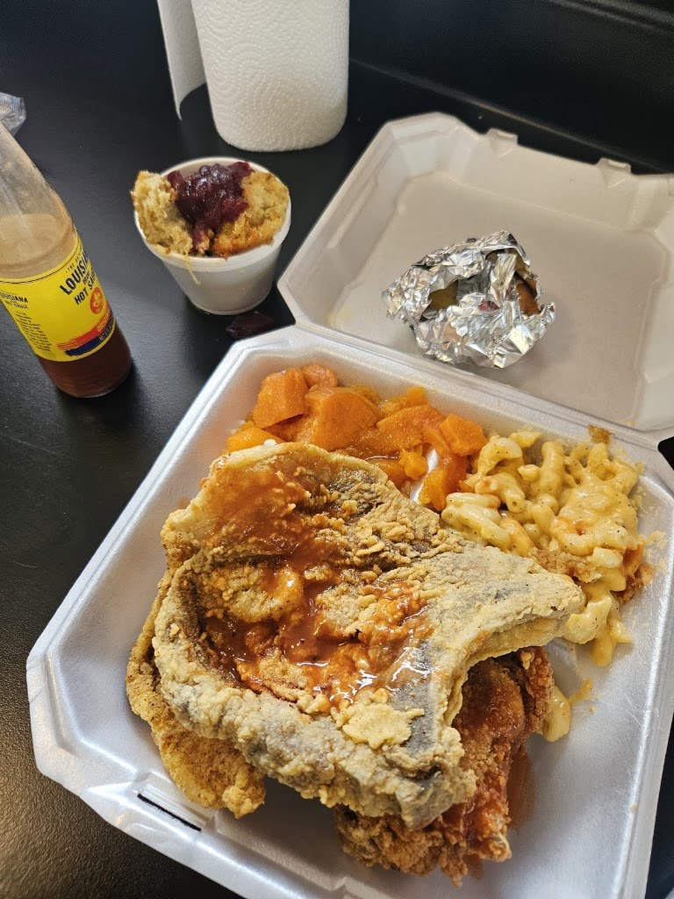
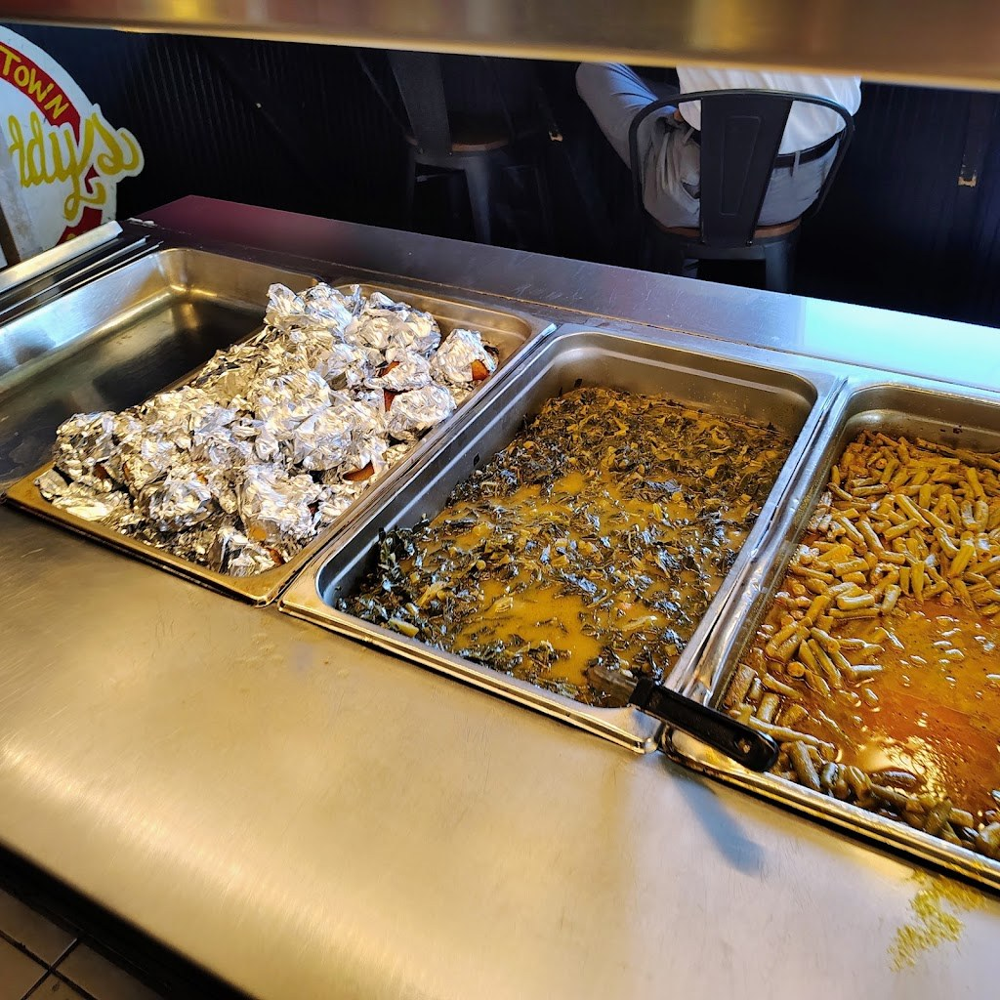
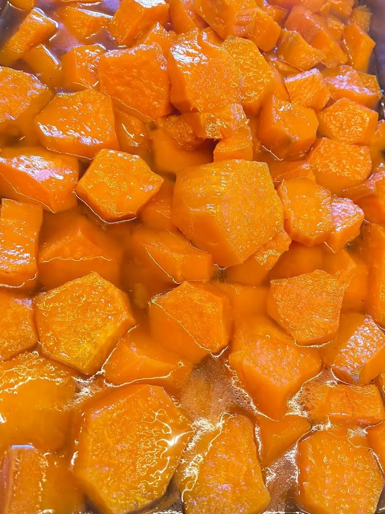

Visit Big Daddys Soul Food To Go
Family-owned soul food in Gulfport, with a self-serve buffet and takeout, fried chicken, BBQ ribs, and catfish.
Address: 2605 25th Ave, Gulfport, MS 39501
Hours: Monday through Friday, 11:00 AM to 6:00 PM; Saturday, 12:00 PM to 6:00 PM; Sunday, 12:00 PM to 5:00 PM.
Phone: (228) 265-5545
Gallery



All three photos are real photos from the business's Google Maps listing. They show a takeout plate with a fried pork chop, mac and cheese, and yams, buffet steam trays with collard greens and green beans, and a close-up of candied yams in syrup.
Contact
Big Daddys Soul Food To Go serves Gulfport, MS. Questions? Call (228) 265-5545.